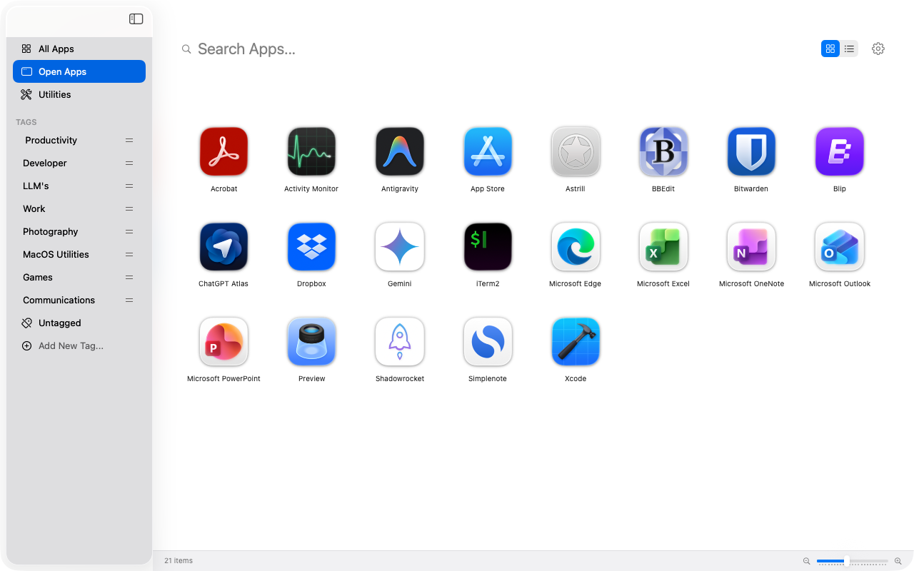

Organize, tag, and launch your applications with a modern, glass-morphic interface designed for speed and focus.

Toggle seamlessly between a visual grid and a detailed list. Satus adapts to your workflow preferences instantly.
Create your own categories. Drag and drop apps into "Work", "Creative", or "Tools" to keep your workspace clutter-free.
Instantly see what's running. The "Open Apps" view lets you cycle through active processes without losing context.
Find any app in milliseconds. Just type to filter your library, no matter how many applications you have installed.
We are just getting started. Expect new features, themes, and integrations in future updates.